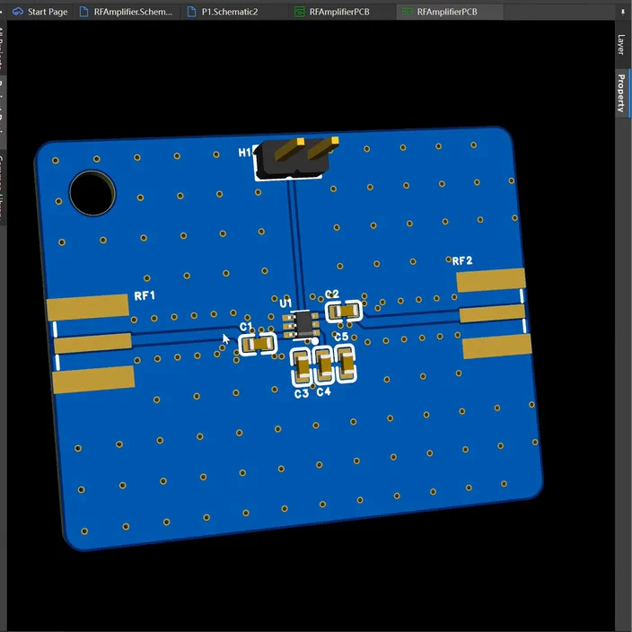

Small local models
Purpose-built tools keep geometry calculations in the placement and routing engines. See what a local model needs to drive the workflow and how to evaluate a run.
Working with local models →Open-source MCP for EasyEDA Pro
Connect your AI agent to EasyEDA Pro to build schematics, place and route PCBs, and review changes in the editor.

Featured workflow
Follow the BGA2869 2 GHz amplifier from schematic organization through pin-level placement constraints, routing, ground planes and via stitching.
Look for the RF ports at opposite board edges and the bias network grouped around the amplifier. The resulting tracks, vias and copper zones are native EasyEDA objects.
Explore the design decisions →Purpose-built tools keep geometry calculations in the placement and routing engines. See what a local model needs to drive the workflow and how to evaluate a run.
Working with local models →Run circuit simulations with ngspice and see where PCB parameter extraction fits on the roadmap.
Explore simulation and analysis →Star the repository to help people find it, or donate through Tribute to support development.